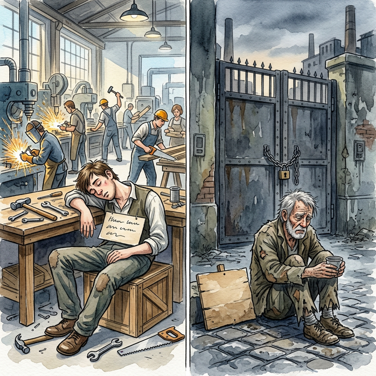
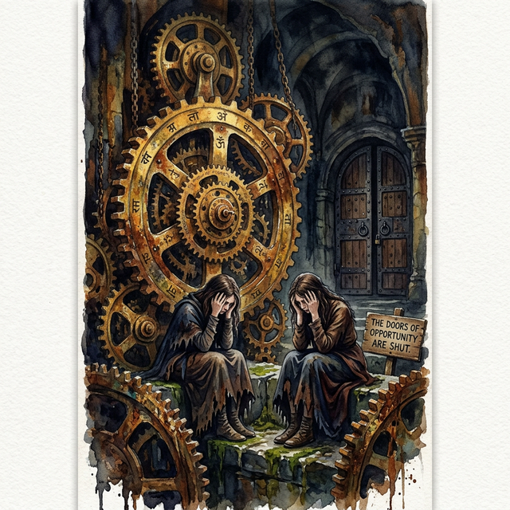
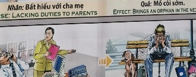

El Peso de la IndolenciaThe Weight of IndolenceIl peso dell'indolenza懒惰的重量وزن الكسلТяжесть праздностиDas Gewicht der TrägheitLe poids de l'indolence怠惰の重みO peso da indolência
La autoridad sin compasión es un préstamo con intereses de miseria. Authority without compassion is a loan with interest of misery.
El mundo se sostiene sobre el pulso invisible y armónico de todos los seres que se esmeran en brindar su talento al servicio del prójimo. Escabullirse por sistema, defraudar la labor con indolencia y elegir holgazanear mientras los hermanos sostienen el peso, rompe el equilibrio...
Esta patética artimaña de falsear el propio sudor agota el flujo de la abundancia reservada. Todo lo que eludimos forzosamente acaba amontonándose como una losa frente a nuestras oportunidades.
Por lo tanto, quien no contribuye hoy ennobleciendo el trabajo, se topará invariablemente con que la vida le cierra todo acceso, siendo arrojado posteriormente a los pantanos cruentos de la miseria y a sufrir perpetuamente un agobiante desempleo.
The world is sustained by the invisible and harmonious pulse of all beings who strive to offer their talent to the service of others. Sneaking by system, letting down the work with indolence and choosing to laze while the brothers bear the weight, breaks the balance...
This pathetic trick of falsifying one's own sweat exhausts the flow of reserved abundance. Everything that we necessarily avoid ends up piling up like a stone in front of our opportunities.
Therefore, those who do not contribute today by ennobling work will invariably find that life closes all access to them, subsequently being thrown into the bloody swamps of misery and perpetually suffering from crippling unemployment.
Il mondo è sostenuto dalla pulsazione invisibile e armoniosa di tutti gli esseri che si sforzano di offrire il proprio talento al servizio degli altri. Furtivamente per sistema, abbandonando il lavoro con indolenza e scegliendo di oziare mentre i fratelli portano il peso, rompe l'equilibrio...
Questo patetico trucco di falsificare il proprio sudore esaurisce il flusso dell'abbondanza riservata. Tutto ciò che necessariamente evitiamo finisce per accumularsi come un sasso davanti alle nostre opportunità.
Pertanto, coloro che oggi non contribuiscono a nobilitare il lavoro scopriranno invariabilmente che la vita ne chiude ogni accesso, venendo successivamente gettati nelle sanguinose paludi della miseria e soffrendo perennemente di una disoccupazione paralizzante.
世界是由所有努力贡献自己的才能为他人服务的众生无形而和谐的脉搏所支撑的。被系统偷偷摸摸，懒惰地放下工作，选择偷懒，而兄弟们却负重前行，打破了平衡……
这种伪造自己汗水的可悲把戏耗尽了储备的丰富性。我们必须避免的一切最终都会像石头一样堆积在我们的机会面前。
因此，那些今天不通过高尚的工作做出贡献的人总是会发现生活关闭了他们所有的出路，随后被扔进血淋淋的痛苦沼泽，永远遭受严重的失业之苦。
إن العالم مدعوم بالنبض غير المرئي والمتناغم لجميع الكائنات التي تسعى جاهدة لتقديم مواهبها لخدمة الآخرين. التسلل بالنظام، والتخلي عن العمل بالتكاسل، واختيار التكاسل بينما يتحمل الإخوة الثقل، يكسر الميزان...
هذه الخدعة المثيرة للشفقة المتمثلة في تزوير عرق المرء تستنزف تدفق الوفرة المحفوظة. كل ما نتجنبه بالضرورة ينتهي به الأمر إلى التراكم مثل الحجر أمام الفرص المتاحة لنا.
ولذلك، فإن أولئك الذين لا يساهمون اليوم في تعظيم العمل، سيجدون دائمًا أن الحياة تغلق عليهم كل الطرق، فيُرمون بعد ذلك في مستنقعات البؤس الدموية ويعانون دائمًا من البطالة المعوقة.
Мир поддерживается невидимым и гармоничным пульсом всех существ, которые стремятся предложить свой талант на служение другим. Подкрадываться к системе, праздно отказываясь от работы и предпочитая бездельничать, пока братья несут бремя, нарушает баланс...
Этот жалкий трюк с фальсификацией собственного пота истощает поток сдержанного изобилия. Все, чего мы неизбежно избегаем, в конечном итоге накапливается камнем перед нашими возможностями.
Поэтому те, кто сегодня не вносит свой вклад, облагораживая работу, неизбежно обнаружат, что жизнь закрывает к ним всякий доступ, впоследствии их бросают в кровавые болота нищеты и постоянно страдают от ужасающей безработицы.
Die Welt wird vom unsichtbaren und harmonischen Puls aller Wesen getragen, die danach streben, ihr Talent in den Dienst anderer zu stellen. Sich durch das System zu schleichen, die Arbeit mit Trägheit niederzulassen und sich dafür zu entscheiden, zu faulenzen, während die Brüder die Last tragen, bringt das Gleichgewicht durcheinander ...
Dieser erbärmliche Trick, den eigenen Schweiß zu fälschen, erschöpft den Fluss der reservierten Fülle. Alles, was wir unbedingt vermeiden, türmt sich am Ende wie ein Stein vor unseren Möglichkeiten auf.
Daher werden diejenigen, die heute keinen Beitrag leisten, indem sie ihre Arbeit veredeln, unweigerlich feststellen, dass ihnen das Leben jeden Zugang versperrt, sie anschließend in die blutigen Sümpfe des Elends geworfen werden und ständig unter lähmender Arbeitslosigkeit leiden.
Le monde est soutenu par le pouls invisible et harmonieux de tous les êtres qui s’efforcent d’offrir leur talent au service des autres. Se faufiler par système, abandonner le travail avec indolence et choisir de paresser pendant que les frères supportent le poids, brise l'équilibre...
Cette astuce pathétique consistant à falsifier sa propre sueur épuise le flux de l'abondance réservée. Tout ce que l’on évite forcément finit par s’accumuler comme une pierre devant nos opportunités.
Par conséquent, ceux qui ne contribuent pas aujourd’hui en ennoblissant le travail découvriront invariablement que la vie leur ferme tout accès, étant ensuite jetés dans les marais sanglants de la misère et souffrant perpétuellement d’un chômage paralysant.
世界は、自分の才能を他者への奉仕に提供しようと努めるすべての存在の目に見えない調和のとれた鼓動によって維持されています。システムを利用し、怠惰に仕事を放棄し、兄弟が重荷を負っている間、怠惰に過ごすことを選択すると、バランスが崩れます...
自分の汗を偽るこの哀れなトリックは、蓄えられた豊かさの流れを枯渇させます。私たちが必然的に避けているものはすべて、チャンスの前に石のように積み重なってしまうのです。
したがって、今日、崇高な仕事によって貢献していない人々は、常に、人生が彼らへのあらゆるアクセスを閉ざし、その後悲惨な血まみれの沼地に投げ込まれ、壊滅的な失業に永遠に苦しむことに気づくでしょう。
O mundo é sustentado pelo pulso invisível e harmonioso de todos os seres que se esforçam para oferecer o seu talento ao serviço dos outros. Esgueirar-se pelo sistema, abandonar o trabalho com indolência e optar por preguiçar enquanto os irmãos carregam o peso, quebra o equilíbrio...
Esse truque patético de falsificar o próprio suor esgota o fluxo da abundância reservada. Tudo o que necessariamente evitamos acaba se acumulando como uma pedra diante das nossas oportunidades.
Portanto, aqueles que hoje não contribuem enobrecendo o trabalho descobrirão invariavelmente que a vida lhes fecha todo o acesso, sendo subsequentemente lançados nos pântanos sangrentos da miséria e sofrendo perpetuamente de um desemprego paralisante.
El Karma trae el fin rápido de las bendiciones materiales. La riqueza se esfuma; el alma debe experimentar lo que significa estar en el lado vulnerable para valorar la justicia.
Karma brings a quick end to material blessings. Wealth vanishes; the soul must experience what it means to be on the vulnerable side to value justice.
Il karma pone fine rapidamente alle benedizioni materiali. La ricchezza svanisce; l'anima Devi sperimentare cosa significa essere dalla parte vulnerabile per dare valore alla giustizia.
业力会很快结束物质上的祝福。财富消失；灵魂 You must experience what it means to be on the vulnerable side to value justice.
الكارما تجلب نهاية سريعة للبركات المادية. الثروة تختفي؛ الروح يجب أن تختبر ما يعنيه أن تكون في الجانب الضعيف لتقدير العدالة.
Карма приводит к быстрому прекращению материальных благ. Богатство исчезает; душа Вы должны испытать, что значит быть уязвимым, чтобы ценить справедливость.
Karma beendet den materiellen Segen schnell. Reichtum verschwindet; die Seele Um Gerechtigkeit zu schätzen, müssen Sie erfahren, was es bedeutet, auf der verletzlichen Seite zu stehen.
Le karma met fin rapidement aux bénédictions matérielles. La richesse disparaît ; l'âme Vous devez expérimenter ce que signifie être du côté vulnérable pour valoriser la justice.
カルマは物質的な祝福をすぐに終わらせます。富は消えます。魂 正義を大切にするためには、弱い側に立つことが何を意味するのかを経験する必要があります。
Karma traz um fim rápido às bênçãos materiais. A riqueza desaparece; a alma You must experience what it means to be on the vulnerable side to value justice.
El Yunque y la Pereza
The Anvil and Laziness
L'incudine e la pigrizia
铁砧与懒惰
السندان والكسل
Наковальня и лень
Der Amboss und die Faulheit
L'enclume et la paresse
アンビルと怠惰
A bigorna e a preguiça
Un mozo ágil fue contratado en un gran taller rebosante de encargos, al amparo de un techo seguro. Sin embargo, dedicaba sus horas a esconder sus herramientas y dormitar bajo fardos, sintiéndose astuto por no cansar su cuerpo mientras los demás trabajaban hasta el ocaso...
Pero la astucia que se burla del esfuerzo no tarda en cobrar su ironía. Tras malgastar sus años de vigor renegando de su trabajo, el engranaje de su destino se estancó oxidado para siempre.
Llegado un nuevo amanecer, la miseria lo encontró suplicando por una sola hora de faena dura, sentado bajo la lluvia frente a inmensos portones de hierro herméticamente cerrados; deseando, ahora más que nunca, limpiar el sudor de su frente que antaño tanto despreció.
An agile young man was hired in a large workshop overflowing with orders, under the protection of a safe roof. However, he spent his hours hiding his tools and dozing under bundles, feeling clever not to tire his body while the others worked until sunset...
But the cunning that mocks effort soon takes on its irony. After wasting his years of vigor denying his work, the gears of his destiny became rusty forever.
When a new dawn arrived, misery found him begging for a single hour of hard work, sitting in the rain in front of immense, hermetically closed iron gates; desiring, now more than ever, to wipe the sweat from his brow that he once despised so much.
Un giovane agile fu assunto in una grande officina traboccante di commesse, sotto la protezione di un tetto sicuro. Passava però le ore nascondendo i suoi attrezzi e sonnecchiando sotto i fagotti, sentendosi furbo per non affaticare il corpo mentre gli altri lavoravano fino al tramonto...
Ma l’astuzia che si fa beffe dello sforzo assume presto la sua ironia. Dopo aver sprecato i suoi anni di vigore rinnegando il suo lavoro, gli ingranaggi del suo destino si arrugginirono per sempre.
Quando arrivò una nuova alba, la miseria lo trovò a mendicare una sola ora di duro lavoro, seduto sotto la pioggia davanti a immensi cancelli di ferro chiusi ermeticamente; desiderando, ora più che mai, di asciugarsi il sudore dalla fronte che un tempo tanto disprezzava.
一个敏捷的年轻人被雇用在一个充满订单的大车间里，在安全屋顶的保护下。然而，他花了很多时间把工具藏起来，在包裹下打瞌睡，他觉得自己很聪明，在其他人工作到日落时不让自己的身体感到疲劳……
但嘲笑努力的狡猾很快就变得讽刺起来。在浪费了多年的精力否认他的工作之后，他的命运的齿轮永远生锈了。
当新的黎明到来时，他在雨中坐在巨大的、密封的铁门前，苦苦哀求一个小时的艰苦工作；现在比以往任何时候都更渴望擦去他曾经如此鄙视的额头上的汗水。
تم توظيف شاب رشيق في ورشة كبيرة تفيض بالأوامر، تحت حماية سقف آمن. لكنه كان يمضي ساعاته في إخفاء أدواته ويغفو تحت الحزم، متحليا بالذكاء حتى لا يتعب جسده بينما يعمل الآخرون حتى غروب الشمس...
لكن المكر الذي يسخر من الجهد سرعان ما يتحول إلى سخرية. بعد أن أضاع سنوات نشاطه في إنكار عمله، أصبحت تروس مصيره صدئة إلى الأبد.
عندما بزغ فجر جديد، وجده البؤس يتوسل ساعة واحدة من العمل الشاق، جالسًا تحت المطر أمام بوابات حديدية ضخمة مغلقة بإحكام؛ يرغب الآن أكثر من أي وقت مضى في مسح العرق عن جبينه الذي كان يحتقره كثيرًا في السابق.
Расторопный юноша был принят на работу в большую, переполненную заказами мастерскую, под охрану надежной крыши. Однако он часами прятал свои инструменты и дремал под узлами, чувствуя себя умным, чтобы не утомлять свое тело, пока остальные работали до заката...
Но хитрость, которая высмеивает усилия, вскоре приобретает свою иронию. После того, как он потратил годы энергии на отказ от своей работы, шестерни его судьбы навсегда заржавели.
Когда наступил новый рассвет, несчастье заставило его просить хотя бы один час тяжелой работы, сидя под дождем перед огромными, герметично закрытыми железными воротами; желая теперь больше, чем когда-либо, вытереть пот со лба, который он когда-то так презирал.
Unter dem Schutz eines sicheren Daches wurde ein agiler junger Mann in einer großen Werkstatt voller Aufträge eingestellt. Allerdings verbrachte er seine Stunden damit, seine Werkzeuge zu verstecken und unter Bündeln zu dösen, und fühlte sich klug, seinen Körper nicht zu ermüden, während die anderen bis zum Sonnenuntergang arbeiteten ...
Doch die Gerissenheit, die den Aufwand verspottet, nimmt bald ihre Ironie an. Nachdem er seine Lebenskraft damit vergeudet hatte, seine Arbeit zu verleugnen, geriet das Getriebe seines Schicksals für immer in Rost.
Als ein neuer Morgen anbrach, bettelte er voller Elend um eine einzige Stunde harter Arbeit und saß im Regen vor riesigen, hermetisch verschlossenen Eisentoren. Er sehnt sich mehr denn je danach, sich den Schweiß von der Stirn zu wischen, den er einst so sehr verachtete.
Un jeune homme agile est embauché dans un grand atelier débordant de commandes, sous la protection d'un toit sûr. Pourtant, il passait ses heures à cacher ses outils et à somnoler sous des fagots, se sentant malin pour ne pas fatiguer son corps pendant que les autres travaillaient jusqu'au coucher du soleil...
Mais la ruse qui se moque de l’effort prend vite son ironie. Après avoir gaspillé ses années de vigueur à nier son travail, les rouages de son destin sont devenus rouillés à jamais.
Lorsqu'une nouvelle aube arrivait, la misère le trouvait à mendier une seule heure de dur labeur, assis sous la pluie devant d'immenses portes de fer hermétiquement fermées ; désirant, plus que jamais, essuyer la sueur de son front qu'il méprisait tant autrefois.
安全な屋根に守られ、注文で溢れる大きな作業場に機敏な青年が雇われた。しかし、彼は他の人たちが日没まで働く間、自分の体を疲れさせないように賢明だと感じながら、道具を隠したり、束の下に居眠りしたりして時間を過ごしました...
しかし、努力を嘲笑する狡猾さはすぐに皮肉を帯びてきます。自分の仕事を否定することに何年も精力を浪費した後、彼の運命の歯車は永遠に錆びてしまった。
新しい夜が明けたとき、彼は雨の中、密閉された巨大な鉄の門の前に座って、一時間の重労働を懇願していた。かつてあれほど軽蔑していた額の汗を今はかつてないほど拭いたいと願っている。
Um jovem ágil foi contratado para uma grande oficina lotada de encomendas, sob a proteção de um teto seguro. No entanto, ele passava horas escondendo suas ferramentas e cochilando sob fardos, sentindo-se esperto para não cansar o corpo enquanto os outros trabalhavam até o pôr do sol...
Mas a astúcia que zomba do esforço logo assume a sua ironia. Depois de desperdiçar anos de vigor negando seu trabalho, as engrenagens de seu destino enferrujaram para sempre.
Quando chegou um novo amanhecer, a miséria o encontrou implorando por uma única hora de trabalho duro, sentado na chuva diante de imensos portões de ferro hermeticamente fechados; desejando, agora mais do que nunca, enxugar da testa o suor que antes tanto desprezava.

La Inspiración Original
The Original Inspiration
L'Ispirazione Originale
最初的灵感
الإلهام الأصلي
Оригинальное вдохновение
Die Ursprüngliche Inspiration
L'Inspiration Originale
元のインスピレーション
A Inspiração Original
La historia que hemos relatado en este capítulo está inspirada por el pasaje de la escena original de los murales «Tranh Nhân Quả» (Ilustraciones del Karma) del Templo Linh Ung en Da Nang, capturado en la imagen.
La storia che abbiamo raccontato in questo capitolo è ispirata al passaggio della scena originale dei murali “Tranh Nhân Quả” (Illustrazioni del Karma) del Tempio Linh Ung a Da Nang, catturati nell'immagine.
我们在本章中讲述的故事的灵感来自图像中捕获的岘港灵应寺“Tranh Nhân Quả”（业力插图）壁画的原始场景。
القصة التي رويناها في هذا الفصل مستوحاة من مقطع من المشهد الأصلي لجداريات "ترانه نهان كو" (الرسوم التوضيحية للكارما) لمعبد لينه أونغ في دا نانغ، الملتقطة في الصورة.
История, которую мы рассказали в этой главе, вдохновлена отрывком из оригинальной сцены фрески «Тран Нхан Ку» («Иллюстрации кармы») храма Линь Унг в Дананге, запечатленной на изображении.
Die Geschichte, die wir in diesem Kapitel erzählt haben, ist inspiriert von der Passage aus der Originalszene der Wandgemälde „Tranh Nhân Quả“ (Illustrationen von Karma) des Linh Ung-Tempels in Da Nang, die im Bild festgehalten ist.
L'histoire que nous avons racontée dans ce chapitre est inspirée du passage de la scène originale des peintures murales « Tranh Nhân Quả » (Illustrations du Karma) du temple Linh Ung à Da Nang, capturées dans l'image.
この章で私たちが語った物語は、ダナンのリンウン寺院の壁画「Tranh Nhân Quả」（カルマの図）の元のシーンの一節からインスピレーションを得て、画像に収められています。
A história que contamos neste capítulo é inspirada na passagem da cena original dos murais “Tranh Nhân Quả” (Ilustrações do Karma) do Templo Linh Ung em Da Nang, capturada na imagem.
The story we have related in this chapter is inspired by the passage from the original scene of the "Tranh Nhân Quả" (Karma Illustrations) murals at the Linh Ung Temple in Da Nang, captured in the image.

Como se puede apreciar en el pasaje extraído del mural, la causa y su efecto kármico están descritos originalmente en vietnamita y con una breve traducción al inglés. A continuación, te ofrecemos su traducción detallada en los distintos idiomas:
As can be seen in the passage extracted from the mural, the cause and its karmic effect are originally described in Vietnamese with a brief English translation. Below, we offer the detailed translation in different languages:
Come si può vedere nel passaggio estratto dal murale, la causa e il suo effetto karmico sono originariamente descritti in vietnamita con una breve traduzione in inglese. Di seguito offriamo la traduzione dettagliata in diverse lingue:
As can be seen in the passage taken from the mural, the cause and its karmic effect are originally described in Vietnamese and with a brief translation into English.下面，我们为您提供不同语言的详细翻译：
وكما يتبين من المقطع المأخوذ من اللوحة الجدارية، فإن السبب وتأثيره الكارمي موصوفان في الأصل باللغة الفيتنامية مع ترجمة مختصرة إلى الإنجليزية. ونقدم لكم أدناه ترجمتها التفصيلية باللغات المختلفة:
Как видно из отрывка, взятого из фрески, причина и ее кармическое следствие изначально описаны на вьетнамском языке и с кратким переводом на английский язык. Ниже мы предлагаем вам его подробный перевод на разные языки:
Wie aus der Passage aus dem Wandgemälde hervorgeht, werden die Ursache und ihre karmische Wirkung ursprünglich auf Vietnamesisch und mit einer kurzen Übersetzung ins Englische beschrieben. Nachfolgend bieten wir Ihnen die ausführliche Übersetzung in die verschiedenen Sprachen an:
Comme on peut le voir dans le passage tiré de la peinture murale, la cause et son effet karmique sont initialement décrits en vietnamien et avec une brève traduction en anglais. Ci-dessous, nous vous proposons sa traduction détaillée dans les différentes langues :
壁画の一節からわかるように、原因とそのカルマ的影響はもともとベトナム語で説明されており、英語への簡単な翻訳が付けられています。以下に、さまざまな言語での詳細な翻訳を提供します。
Como pode ser visto no trecho retirado do mural, a causa e seu efeito cármico são originalmente descritos em vietnamita e com uma breve tradução para o inglês. Abaixo, oferecemos sua tradução detalhada nos diferentes idiomas:
🇻🇳 Tiếng Việt:
Nhân: Không yêu lao động, không yêu việc làm.
Quả: Bị thất nghiệp.
🇬🇧 English Translation:
Cause: Having no interest in working at your job.
Effect: Brings unemployment.
Traducción Recreada:
Causa: No tener interés en el trabajo y ser negligente por pereza.
Efecto: Provoca carecer de oportunidades, miseria y el desempleo constante.
Recreated Translation:
Cause: Not having interest in work and being negligent due to laziness.
Effect: Causes lack of opportunities, misery and constant unemployment.
Traduzione ricreata:
Causa: non avere interesse per il lavoro ed essere negligente a causa della pigrizia.
Effetto: provoca mancanza di opportunità, miseria e disoccupazione costante.
重新翻译：
原因：对工作没有兴趣，因懒惰而疏忽。
结果：导致缺乏机会、痛苦和持续失业。
إعادة إنشاء الترجمة:
السبب: عدم الاهتمام بالعمل والإهمال بسبب الكسل.
التأثير: يسبب قلة الفرص والبؤس والبطالة المستمرة.
Воссозданный перевод:
Причина: Отсутствие интереса к работе и халатность из-за лени.
Следствие: Вызывает отсутствие возможностей, страдания и постоянную безработицу.
Nachgebildete Übersetzung:
Ursache: Fehlendes Interesse an der Arbeit und Nachlässigkeit aus Faulheit.
Wirkung: Verursacht Chancenlosigkeit, Elend und ständige Arbeitslosigkeit.
Traduction recréée :
Cause : ne pas avoir d'intérêt pour le travail et être négligent à cause de la paresse.
Effet : provoque un manque d'opportunités, de la misère et un chômage constant.
再作成された翻訳:
原因: 仕事に興味がなく、怠惰のため怠けている。
結果: 機会の欠如、悲惨さ、恒常的な失業を引き起こす。
Tradução recriada:
Causa: Não ter interesse no trabalho e ser negligente por preguiça.
Efeito: Causa falta de oportunidades, miséria e desemprego constante.
Análisis: El progreso de toda nuestra red infinita en la que existimos demanda esfuerzo enfocado humano. Omitir, engañar y estancarse pasiva o negligentemente a la hora de proporcionar nuestro valor equitativo no lastima a nuestros superiores, drena la balanza del sustento personal divino; resultando posteriormente despojado rigurosamente de todos los medios honorables de labor frente al agobiante cierre perpetuo de puertas hasta transmutar tal deshonra apática en servicio y esfuerzo vital.
Analysis: The progress of our entire infinite network in which we exist demands focused human effort. Passively or negligently omitting, cheating, and stagnating in providing our equal value does not hurt our superiors, it drains the scale of divine personal sustenance; subsequently being rigorously stripped of all honorable means of work in the face of the overwhelming perpetual closing of doors until such apathetic disgrace was transmuted into service and vital effort.
Analisi: il progresso di tutta la nostra rete infinita in cui esistiamo richiede uno sforzo umano mirato. Omettere, imbrogliare e stagnare passivamente o con negligenza nel fornire il nostro pari valore non danneggia i nostri superiori, prosciuga la scala del sostentamento personale divino; successivamente essere rigorosamente spogliati di ogni onorevole mezzo di lavoro a fronte della schiacciante perpetua chiusura delle porte finché tale apatica disgrazia si trasformò in servizio e impegno vitale.
分析：我们所处的整个无限网络的进步需要人类的集中努力。被动或疏忽地省略、欺骗和停滞不前地提供我们同等的价值并不会伤害我们的上级，它会耗尽神圣的个人维持的规模；随后，面对压倒性的永久关闭大门，他们被严格剥夺了所有光荣的工作手段，直到这种冷漠的耻辱转化为服务和重要的努力。
التحليل: إن التقدم الذي أحرزته شبكتنا اللانهائية بأكملها التي نتواجد فيها يتطلب جهدًا بشريًا مركزًا. إن الحذف والغش والركود في توفير قيمنا المتساوية بشكل سلبي أو إهمال لا يؤذي رؤسائنا، بل يستنزف حجم الرزق الشخصي الإلهي؛ وبعد ذلك يتم تجريدهم بشكل صارم من جميع وسائل العمل المشرفة في مواجهة الإغلاق الدائم الساحق للأبواب حتى يتحول هذا العار اللامبالي إلى جهد خدمي وحيوي.
Анализ. Развитие всей нашей бесконечной сети, в которой мы существуем, требует целенаправленных человеческих усилий. Пассивное или небрежное упущение, обман и застой в обеспечении нашей равной ценности не причиняют вреда нашему начальству, а истощают масштаб божественной личной поддержки; впоследствии его строго лишили всех достойных средств работы перед лицом подавляющего постоянного закрытия дверей, пока такой апатичный позор не превратился в служение и жизненно важные усилия.
Analyse: Der Fortschritt unseres gesamten unendlichen Netzwerks, in dem wir existieren, erfordert gezielte menschliche Anstrengung. Passives oder fahrlässiges Unterlassen, Betrügen und Stagnieren bei der Wahrung unseres gleichen Wertes schadet unseren Vorgesetzten nicht, sondern schmälert die göttliche persönliche Versorgung; Anschließend wurde er angesichts der überwältigenden ständigen Schließung der Türen rigoros aller ehrenhaften Arbeitsmittel beraubt, bis sich diese apathische Schande in Dienst und lebenswichtige Anstrengung verwandelte.
Analyse : La progression de l'ensemble de notre réseau infini dans lequel nous existons exige un effort humain ciblé. Omettre passivement ou par négligence, tricher et stagner en fournissant notre valeur égale ne nuit pas à nos supérieurs, cela draine l'échelle de la subsistance personnelle divine ; par la suite, ils ont été rigoureusement dépouillés de tous les moyens de travail honorables face à la fermeture perpétuelle et écrasante des portes jusqu'à ce qu'une telle honte apathique soit transmuée en service et en effort vital.
分析: 私たちが存在する無限のネットワーク全体の進歩には、集中的な人間の努力が必要です。私たちに同等の価値を提供する際に、消極的または怠慢に省略したり、ごまかしたり、停滞したりしても、上司を傷つけることはありません。それは、神聖な個人の養いの規模を枯渇させます。その後、そのような無関心な恥辱が奉仕と重要な努力に変えられるまで、圧倒的な絶え間ないドアの閉鎖に直面して、すべての名誉ある労働手段を厳しく剥奪されました。
Análise: O progresso de toda a nossa rede infinita em que existimos exige um esforço humano concentrado. Omitir, trapacear e estagnar passiva ou negligentemente no fornecimento de nosso valor igual não prejudica nossos superiores, mas esgota a escala do sustento pessoal divino; sendo posteriormente rigorosamente despojado de todos os meios honrosos de trabalho diante do avassalador e perpétuo fechamento de portas, até que tal desgraça apática se transmutasse em serviço e esforço vital.
Si quieres conocer más sobre el proyecto o colaborar, accede a nuestro Linktree.
If you want to know more about the project or collaborate, access our Linktree.
Se vuoi saperne di più sul progetto o collaborare, accedi al nostro Linktree.
如果您想了解有关该项目或合作的更多信息，请访问我们的 Linktree.
إذا كنت تريد معرفة المزيد عن المشروع أو التعاون، قم بالوصول إلى موقعنا Linktree.
Если вы хотите узнать больше о проекте или сотрудничать, посетите наш Linktree.
Wenn Sie mehr über das Projekt erfahren oder zusammenarbeiten möchten, greifen Sie auf unsere zu Linktree.
Si vous souhaitez en savoir plus sur le projet ou collaborer, accédez à notre Linktree.
プロジェクトについて詳しく知りたい場合、またはコラボレーションしたい場合は、こちらにアクセスしてください。 Linktree.
Se quiser saber mais sobre o projeto ou colaborar, acesse nosso Linktree.